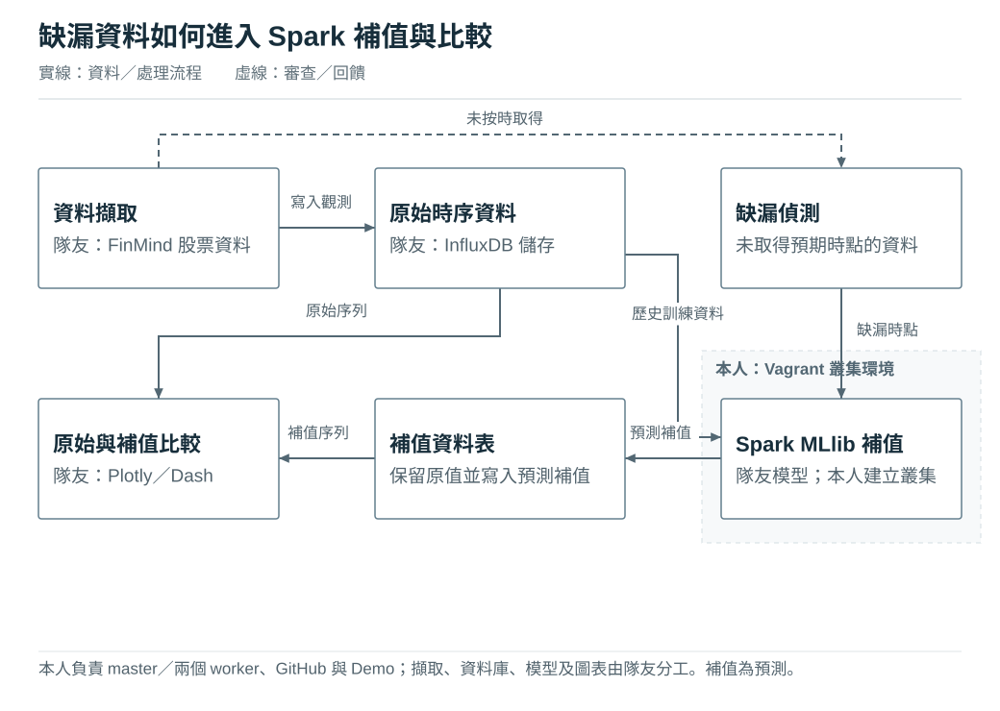

課程專案
Distributed Spark Recovery
課程團隊串接資料擷取、時序儲存、缺漏偵測、分散式模型與儀表板。
- 我的工作
- 負責 Spark 叢集、GitHub 協作及示範影片，以 Vagrant 建置一個主節點與兩個工作節點，支援團隊整合資料補值流程。
- 成果與狀態
- 團隊完成擷取、缺漏偵測、Spark MLlib 及儀表板串接的課程系統。
- 紀錄時間
- 2022 年課程專案
核心問題
擷取失敗造成時序缺漏，需串接偵測、補復及展示。
系統架構與流程
架構說明
- 輸入
- 資料擷取結果、時間序列儲存及缺漏區段。
- 處理方式
- 團隊偵測缺漏並以分散式模型補值；我以Vagrant建立Spark master與worker環境，負責GitHub與Demo影片。
- 產出
- 可啟動的課程系統與資料恢復流程展示。
流程圖

本人負責 master／兩個 worker、GitHub 與 Demo；擷取、資料庫、模型及圖表由隊友分工。補值為預測。（點圖放大）操作介面與互動
原始儀表板將觀測與補值序列視覺化；補值屬模型估計，不能混同真實量測。儀表板實作保留團隊分工。
 團隊原始流程圖：爬取失敗時的資料補全路徑。（點圖放大）
團隊原始流程圖：爬取失敗時的資料補全路徑。（點圖放大）核心問題與設計判斷
把分散式環境變成團隊可啟動的工作基底
課程系統需讓資料處理工作在多節點執行，團隊需要可重建的叢集。
本人負責Spark cluster，以Vagrant在一台電腦建立master與兩個worker。 設定節點連線、Java／Spark環境及啟動步驟。
建立可依文件啟動的叢集環境，支援團隊串接資料補值流程。
把各自運作的模組說成一條完整流程
叢集能啟動之後，擷取、儲存、補值與圖表仍分屬不同成員；展示必須讓觀眾看懂資料如何接續。
我負責 GitHub 與展示影片，團隊 README 保留各模組操作步驟；透過 Demo 呈現從原始資料到補值及圖表的流程。模型、爬蟲與資料庫依隊友分工完成。
團隊完成可展示的課程系統，我的叢集工作與整體串接展示各有明確交付；補值結果保留為模型預測。
Apache Spark · Vagrant · Spark MLlib · InfluxDB · Plotly · Dash
成果與驗證範圍
團隊完成擷取、缺漏偵測、Spark MLlib 及儀表板串接的課程系統。
適用範圍
補值為模型預測，團隊分別負責擷取、儲存、模型及儀表板。